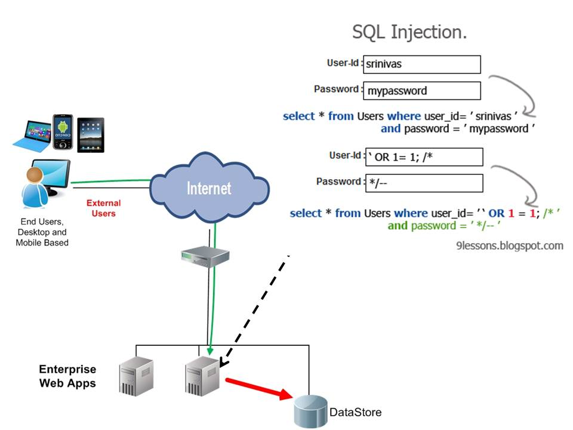

University of Salamanca ACM student chapter
¿Qué es la Association for Computer Machinery?
Perl
Haciendo las cosas fáciles fácilmente y las difíciles posibles
Perliendo el miedo
Perl es un lenguaje pensado para ser sencillo, potente y flexible.
Favorece al desarrollador experto. El aprendiz lo tiene más difícil que en otros lenguajes
Características
- Perl es rápido
- Tiene una sintaxis reducida y limpia, pero difícil para el principiante
- Es un lenguaje de alto nivel
- Tiene una gran comunidad por detrás
- Tiene como objetivo ahorrar tiempo al desarrollador
- Es multipropósito
- Multiparadigma
Perl es rápido
El código es compilado a un bytecode que es ejecutado por la Perl Virtual Machine
Sintaxis simple, pero difícil para el principiante
Ejemplo de código
#!/usr/bin/perl
open(my $file, "/var/www/administracion/download/$filename");
my $newname = $filename;
$newname =~s/\./\.nocomment\./ig;
Es un lenguaje de alto nivel
Ahorra al programador líneas de código
$newname =~s/\./\.nocomment\./ig;
Es multipropósito
“Hay muy pocas cosas que no puedas hacer con Perl. Por ejemplo, no es recomendable implementar un driver de interrupciones a nivel de micronúcleo con Perl (a pesar de que se ha hecho).”
Es multiparadigma
¿Para qué sirve Perl?
- Procesamiento de ficheros
- Para GCI
- Para administrar sistemas
- Para lo que quieras
Primer programa
#!/usr/bin/env perl
print "Hello, ACM!";
Tipos de datos
Perl cuenta únicamente con dos tipos de datos:
Aporta flexibilidad y a partir de ellos se construyen tipos más complejos
$calar
Cualquier representación de un valor 'unitario'
No es necesario indicar el tipo de dato, Perl se adapta al contexto
#!/usr/bin/env perl
$numero = 10;
$cadena = '20';
print $numero + $cadena;
print $cadena . $numero;
Tampoco es necesario especificar el tipo de número, todos tienen la misma representación interna
Valores nulos (0, "") se utilizan como tipo falso booleano
@rray
Cualquier colección de valores escalares
#!/usr/bin/env perl
$numero = 10;
$cadena = '20';
@datos = ($numero, $cadena);
print $datos[0];
@nombres = qw/Ringo Paul John George/;
$elementos = @nombres;
Gran cantidad de operaciones para un array
#!/usr/bin/env perl
@nombres = qw/Ringo Paul John George/;
print (pop (@nombres));
print shift @nombres;
El valor undef
Si no inicializamos una variable, contará con este valor especial, que representará un tipo de dato distinto según el contexto
#!/usr/bin/env perl
$var;
print $var;
$var2 = $var + 1;
Con defined $variable ; podemos comprobar si una variable se encuentra definida
Gestión de la memoria
Perl trabaja con referencias a elementos en memoria, y realiza la gestión mediante un contador. No es necesario reservar ni liberar espacio
El límite lo marca la memoria
¿Y qué pasa con los ámbitos de alcance?
Las variables tienen como ámbito el bloque en el que han sido declaradas y los inferiores
¿Y las variables privadas?
Con el operador my se declaran variables privadas. Con state además mantienen su valor entre invocaciones a una subrutina
El contexto es importante
La flexibilidad del lenguaje permite que una variable se comporte de una forma u otra dependiendo del momento
#!/usr/bin/env perl
$var = 10;
@array = $var;
$var = @array;
Herramienta muy potente, pero peligrosa si no se utiliza bien
Perl 101: Lo más básico
Estructuras de control
if y unless
Operadores lógicos
|
|
Bucles
while, do, until
for, foreach
#!/usr/bin/env perl
$var;
for($var=0;$var<10;$var=$var+2){
print $var;
}
#!/usr/bin/env perl
@var = qw(Foo Bar);
foreach (@var){
print $_ . "\n";
}
Subrutinas
Bloques de código invocables
Mucho más flexibles que en otros lenguajes
Argumentos
A diferencia de otros lenguajes, en Perl no se definen los argumentos que una función toma. El array @_ los almacena
sub routine{
foreach $number (@_){
print 'The number is' . $number . "\n";
}
}
&routine (3,2,1);
Un poco más avanzado
Procesado de cadenas de texto
Expresiones regulares
Cadenas de caracteres que conforman un patrón. Permiten procesar fácilmente cadenas de texto
Expresiones regulares
Perl toma todo el potencial de herramientas como awk o sed y lo amplía
Un ejemplo básico
$var = "usuario:x:100:101::/home/usuario:/bin/bash";
if($var =~ /[a-zA-Z][a-zA-Z0-9]+:.*:\d+:\d+:.*:\/.*:\/.*/){
print "Es log\n";
}else{
print "No es passwd\n"
}
Regex overpowered
Existe una gran cantidad de recursos dentro de Perl para potenciar el potencial de las expresiones regulares
/[a-zA-Z][a-zA-Z0-9]+: .* :\d+ :\d+ :.* :\/.* :\/.*/x/[a-zA-Z][a-zA-Z0-9]+:.*:\d+:\d+:.*:\/.*:\/.*/iAtajos: \i, \d, \w, \s
Ficheros
Ficheros: básico
El funcionamiento es muy similar a los ficheros en UNIX. Se almacena en un descriptor la información de acceso al fichero y a través del mismo se realizan todas las operaciones
open $fichero, '/home/martin/datos.txt';
print $fichero 'Hola!' . "\n";
close $fichero;
Muchas más opciones: Procesamiento de ficheros
open $fichero, '<', '/home/martin/datos.txt';
while (<$fichero>){
print $_;
}
Perl orientado a objetos
Perl es un lenguaje orientado a objetos cuando el programador lo desea
Permite aprovechar sus ventajas sin forzar al programador a utilizarlo
Funcionamiento
Tal y como ocurre en otros lenguajes, un objeto es una colección de referencias. En caso de Perl
Ejemplo de una clase con un método
package Utils;
sub new{
my $referencia = {};
bless $referencia;
return $referencia;
}
sub suma{
print $_[0] + $_[1];
}
Permite aprovechar sus ventajas sin forzar al programador a utilizarlo
Utilización
use Utils;
$u = Utils->new();
$u->suma(1,2);
Módulos
- Una de los grandes puntos a favor de Perl es la comunidad alrededor del lenguaje
- Como máximo exponente destaca CPAN
CPAN es la biblioteca de código más grande del mundo, con una comunidad mejorándola y aportando nuevo código cada día
Utilización de módulos
Los módulos instalados se incluyen con la directiva use
use DateTime;
$dt = DateTime->new(
year => 1964,
month => 10,
day => 16,
hour => 16,
minute => 12,
second => 47,
nanosecond => 500000000,
time_zone => 'Asia/Taipei',
);
print $dt->year;
Instalación de módulos
Los módulos pueden ser descargados directamente desde la web del autor o CPAN. Sin embargo, la opción más sencilla es utilizar el módulo preinstalado cpan o alguna de sus variantes
Errores
Perl es capaz de gestionar excepciones y errores graves, así como informar de forma clara sobre los mismos
open $archivo, '>', '/etc/passwd' or die "No he podido abrir el fichero";
close $archivo;
Un par de demos más...

Cuidado con las inyecciones!
La inyección SQL
Fork us on GitHub!

Y próximamente...


Plataforma de hardware libre sencilla de utilizar